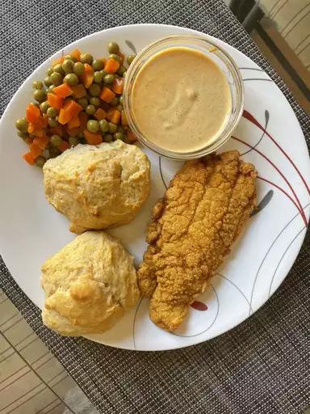

Southern Fried Catfish

Description
This fried catfish recipe is a classic Southern dish traditionally served with buttermilk hush puppies and buttermilk coleslaw.
The nutritional analysis for this recipe reflects an estimated 10% of the oil for frying as well as the full amount of the coating and breading.
Therefore, the values represented may not be accurate.
Ingredients
- ½ cup buttermilk
- ½ cup water
- salt and peper, to taste
- 1 pound catfish fillets, cut in strips
- 1 ½ cups fine cornmeal
- ½ cup all-purpose flour
- 1 teaspoon seafood seasoning, such as Old Bay
- 1 quart vegetable oil for deep frying
Directions
- Mix buttermilk, water, salt, and pepper in a small bowl. Pour mixture into a flat pan large enough to hold fillets.
Arrange fillets in a single layer in the pan, turning to coat each side. Set aside to marinate.
- Combine cornmeal, flour, and seafood seasoning in a 2-gallon resealable plastic bag.
Add fillets to the bag, a few at a time, and tumble gently until evenly coated.
- Heat oil in a deep fryer to 365 degrees F (185 degrees C).
- Fry fillets in hot oil until crisp and golden brown, about 3 minutes. Work in batches to avoid overcrowding, so fillets have room to brown properly.
Drain on paper towels.